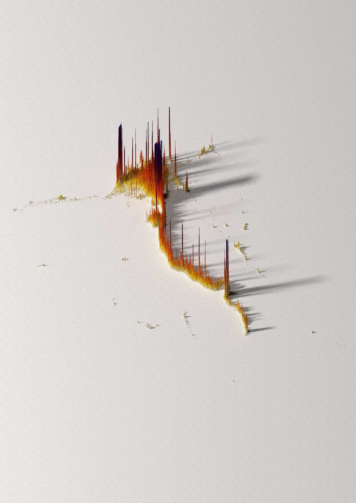

My Backward "Confirmatory" Rush
Let me start with an honest confession: before this semester, I was approaching data science completely backward.
Whenever our instructors handed us an analytical assignment, my immediate instinct was to formulate a conclusion in my head first, download a dataset, and rush to ask: “Does this confirm what I want to prove?” I skipped the foundational groundwork entirely. I would jump directly into multi-variable scatter plots, high-dimensional projections, and correlation heatmaps without spending even five minutes understanding what the individual columns actually contained.
I didn't pay attention to whether a feature had a severe right skew, whether its variance was dominated by two or three massive outliers, or what the units of measurement physically represented. To me, a dataset was simply a monolithic block of numbers that I needed to shove into an algorithm as quickly as possible.
Inevitably, reality pushed back hard. I would encounter columns with 30% null values. A variable would contain negative numbers where only positive readings made physical sense. Or a correlation coefficient would read as a weak r = 0.12 when I had convinced myself a strong relationship existed.
And whenever I hit those roadblocks, I panicked. I had memorized textbook terms like “mean imputation” and “median imputation,” but in practice, I had little intuition for what damage naive choices caused. I treated missingness like an annoying bug to be erased — blindly writing df.fillna(df.mean()) just to stop my code from crashing. When the resulting models collapsed or made nonsense predictions, I fell into chronic dataset-hopping: abandoning the file at 1:30 AM to hunt Kaggle for something “cleaner.”
That single quote from Ma'am Chris during our opening lectures completely reframed my perspective. EDA isn't a tedious pre-processing chore you rush through to reach machine learning; it is the fundamental sensory phase where you earn the right to model.
One Example I Recall: Stumbling Upon the Egypt Dataset
To give a concrete example — or perhaps the easiest one I can recall from my experience — back in our 2nd-year DATAVIS course, my group and I were caught right in the middle of this dataset-hopping habit. We had spent hours scouting Kaggle, loading candidate files into Google Colab, hitting bizarre percentages and corrupted records, and abandoning them one by one.
We hopped through multiple dead ends until we finally stumbled upon the Egypt Population Density dataset.
The Egypt dataset wasn't really a problem — it was simply the one clean, structured dataset that felt safe enough to work with at the time. It contained reliable records of Egypt's governorates, total census counts, and inhabited land areas. Stumbling upon it felt like striking gold because it gave us a dependable empirical foundation to map the dramatic demographic contrast between the hyper-dense Nile Valley corridor and the vast, sparsely inhabited desert governorates.

✦ Click to Expand 300 DPI OriginalYet even with clean data, our initial raw plots failed completely. Because Cairo and Giza had population densities exceeding tens of thousands of people per square kilometer, plotting the distribution on a standard linear scale flattened every other governorate against the baseline. Matani and the New Valley appeared as empty zeroes.
Without realizing it at the time, we had stumbled upon John Tukey's core doctrine: Re-expression. To make the geographic reality visible, we had to transform the scale using $\log_{10}(\text{density})$. The moment we applied that logarithmic lens, the heavy right tail decompressed, and the real demographic structure of Egypt emerged.